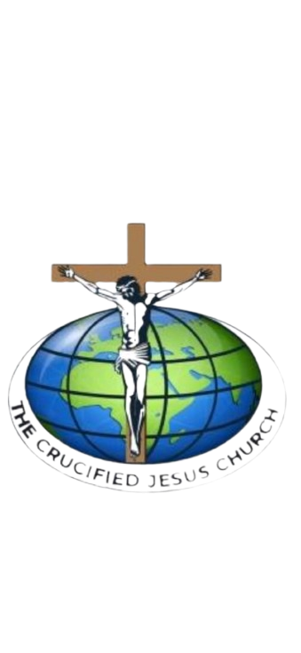

THE CRUCIFIED JESUS CHURCHWELCOME TO
Jesus Christ and Him crucified. A place of faith, prayer, worship and transformation.
DISCOVER OUR CHURCHThe Crucified Jesus Church is a Christian ministry committed to preaching the Gospel of Jesus Christ, nurturing believers and spreading the message of salvation through the Word of God.
Our foundation is 1 Corinthians 2:2: "For I determined not to know anything among you except Jesus Christ and Him crucified."
Raising young people grounded in Christ.
Building women through faith, prayer and fellowship.
Standing in prayer for the church and nations.
Serving God through praise and worship.
Join us for worship services, Bible studies, prayer meetings, conferences and special gatherings.
Come and fellowship with us!
"For I determined not to know anything among you, except Jesus Christ and Him crucified."
1 Corinthians 2:2Phone: 0796379481
Email: thecrucifiedjeuschurch@gmail.com
Location: Maringo Estate, along Jogoo Road, Nairobi.
CONTACT US ON WHATSAPP